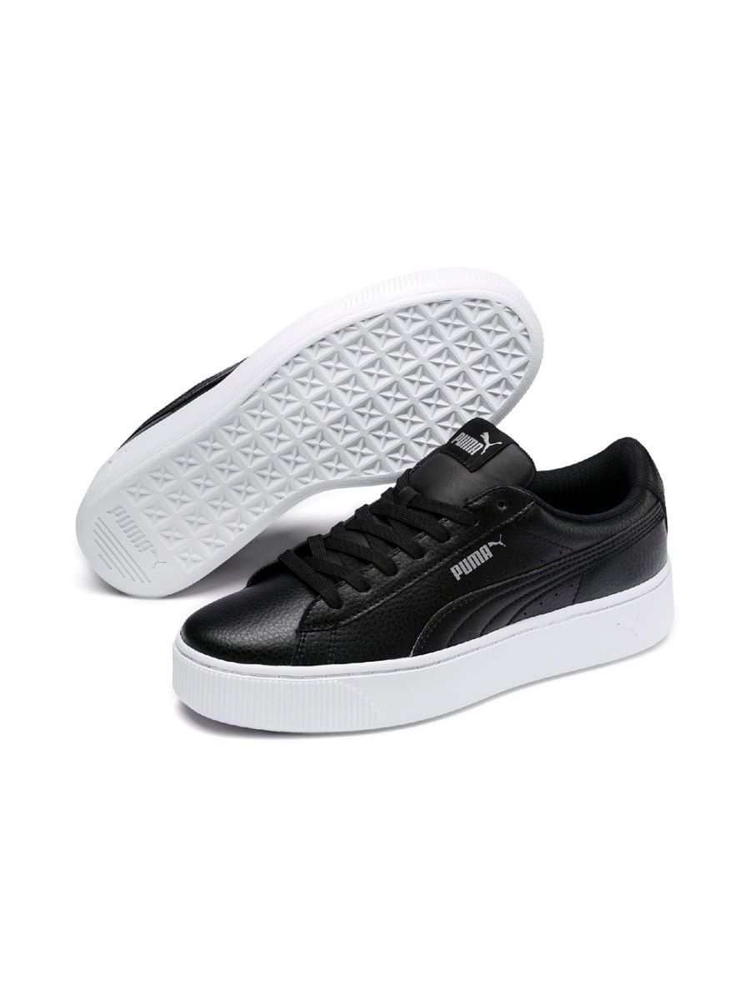

Кеды Puma Vikky Stacked L

Вся линейка Vikky от PUMA - это сочетание спортивности и женственности, и модель туфель Puma Vikky Stacked L не исключение. Прочная высокая подошва-платформа, пришедшая из мира баскетбола, снабжена резиновым накатом, обеспечивающим отличное сцепление с поверхностью. Она дополняется верхом из мягкой кожи высшего качества. О вашем комфорте и свежести ног позаботится стелька из материала SoftFoam+. Обувь серии Vikky от PUMA - это стиль, женственность и изящество!
3 698 ₽
| Материал подкладки обуви | искусственный материал |
| Материал подошвы обуви | резина |
| Материал стельки | искусственный материал |
| Полнота обуви (EUR) | F (5) |
| Высота обуви | низкие |
| Назначение обуви | повседневная |
| Высота подошвы | 2 см |
| Тип покрытия | асфальт |
| Страна производства | Вьетнам |
| Комплектация | кеды |
| Пол | Женский |
Другие похожие товары: